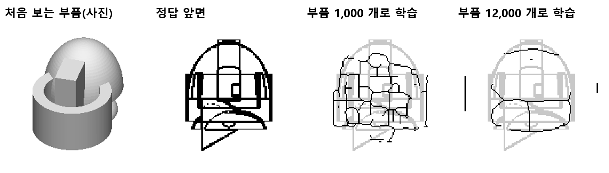

191 데이터 양 — 생성기 부품 1,000 대 12,000 (11-14 · 모델191.py · 모델185.생성기만 · 손으로 정리)
분석
한 줄로
물음: 사진 → 3면도(⑤)가 처음 보는 물건에서 선을 못 그리는 건 학습 부품이 모자라서인가?
답: 아니다. 부품을 12 배로 늘렸더니 처음 보는 부품의 선 맞음이 오히려 내려갔다(선 단위 F1 0.244 → 0.165). 판정: 데이터 양은 손잡이가 아님 → 방식을 바꾼다.
왜 이 판을 했나
185 · 189 · 190 의 출력은 처음 보는 물건마다 흐린 덩어리였다. 같은 망에 생성기 부품 64 개만 외우게 하자 1,500 스텝에서 선을 거의 그대로 그렸다(옛 가는 선 F1 0.987). 망이 그릴 줄은 아는데 처음 보는 것에서 못 그리니, 먼저 「학습 부품이 모자라서인가」를 물었다. 우리 목표는 그림 한 장 → 3면도 → CAD 코드.
바꾼 것 하나
학습에 쓴 생성기 CAD 부품 수(1,000 대 12,000). 사진 짝은 빼고 생성기 렌더만 썼다. 망(DINO 고정 · 풂 0) · 6,000 스텝 · 배치 64 · 시험(생성기 시험 부품 99 개 × 렌더 두 장)은 같다.
결과

| 처음 보는 부품 198 장 | 1,000 개 | 12,000 개 | 판정선(12,000 − 1,000) | 넘었나 |
|---|---|---|---|---|
| 선 단위 F1 | 0.244 | 0.165 | > +0.05 → 데이터 · ≤ +0.02 → 방식 바꿈 | −0.079 · 방식 바꿈 |
| 방향 무관 선 단위 F1 | 0.302 | 0.204 | ||
| 실루엣 IoU | 0.638 | 0.673 |
선 단위 F1 = 선을 갈림점에서 끊은 「선 조각」마다, 조각 길이의 70 % 이상이 상대 선 2 화소 안에 있으면 맞음으로 세어 낸 정밀 · 재현의 조화평균. 정답 1.0 · 6 화소 밀린 정답 0.24 · 정답 실루엣 덩어리 0.05 로 먼저 감사했다.
왜 이렇게 나왔나
확인한 것
- 옛 화소 자(2 화소 허용 F1)로는 0.46 · 0.34 였다. 1,000 개 모델은 실루엣 안을 미로로 덮었고, 미로가 면적을 덮어 점수를 부풀렸다. 그래서 선 단위 자를 새로 만들어 12,000 결과를 보기 전에 판정에 보탰다(커밋 2b44801). 두 자 모두 같은 쪽(방식 바꿈)이다.
- 문턱 0.2 · 0.3 · 0.4 에서도 12,000 이 낮다(0.139 · 0.159 · 0.166 대 0.227 · 0.242 · 0.250).
- 12,000 개 모델은 헛선이 줄어 정밀은 올랐고(0.288 → 0.374) 그리는 선이 적어 재현이 내려갔다(0.229 → 0.133).
- 정보가 없어서가 아니다. 렌더 시점 광선으로 세면 3면도 속 선의 45 % 가 사진 한 장에 보인다. 그런데 1,000 개 모델의 속 선 재현은 보이는 선 0.455 · 안 보이는 선 0.437 · 6 화소 옮긴 가짜 선 0.399 로 거의 같다 — 선 자리를 모르고 면적만 덮는다.
- 실루엣을 잘 딴 장(IoU 0.85 이상 18 장)에서도 속 선 F1 은 0.20 으로 못 딴 장과 같다(상관 0.11).
짐작 (아직 확인 안 함)
- 이 망은 사진 전체를 보고 정해진 축의 화폭에 통째로 그린다. 사진의 모서리와 3면도의 선 사이에 기하 연결이 없어서, 데이터를 늘리면 「평균 모양」만 더 조심스럽게 그린다.
한계
- 시험은 생성기 부품 99 개 × 렌더 두 장뿐이고 시드 하나다.
- 사진 짝(실제 사진)은 이 판에서 안 썼다.
- 12,000 개 판의 학습 부품 점수(0.389)도 낮아, 6,000 스텝이 12,000 개에 모자랐을 수 있다. 스텝을 늘린 판은 안 돌렸다.
배운 것과 다음
데이터를 늘려도 디테일은 안 오고, 그리는 방식이 막고 있다.
- 사진 화소마다 3D 좌표(NOCS)를 배우고 모서리를 기하로 3면도에 옮기는 길(tr193 · 193b)로 넘어간다. 정답 좌표면 선 단위 F1 0.592 까지 된다.
- 182 는 선이 빠진 3면도를 못 읽는다(일부 지우면 「같다」 0.172 → 0) — 반쪽 3면도로 182 를 다시 배운다(tr194).